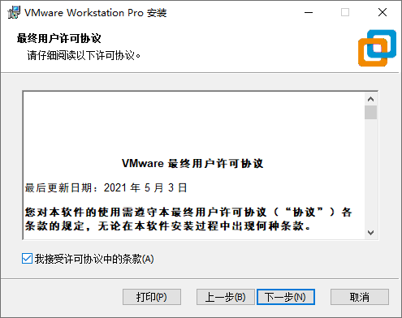
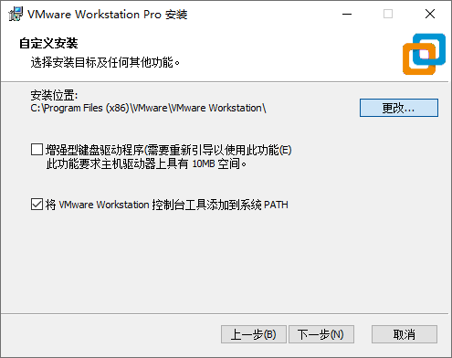
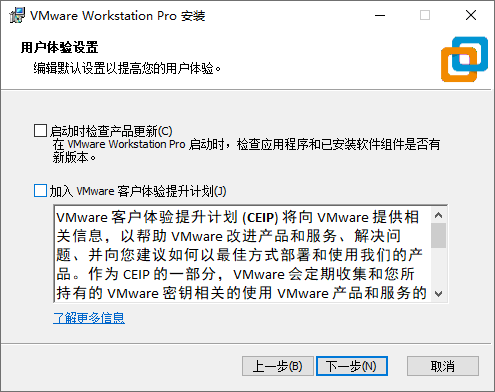
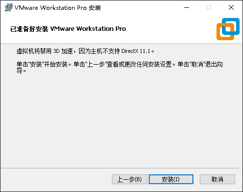
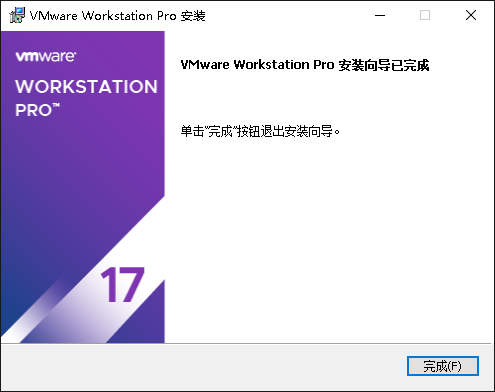
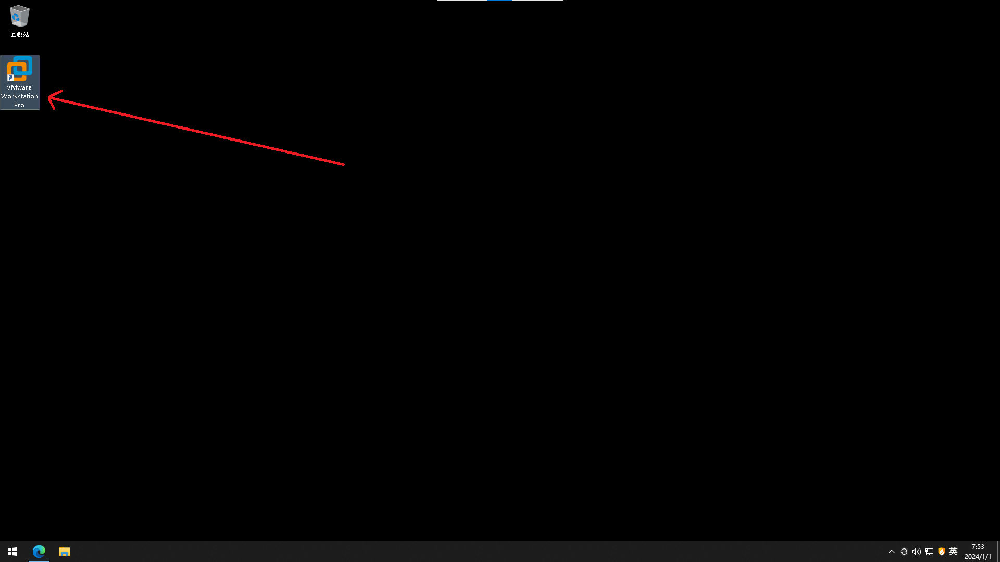

windows安装vmware教程
vmware 又叫 VMware Workstation 17 Pro
vmware下载链接
点击该链接即可下载 Workstation 17 Pro for Windows
https://download3.vmware.com/software/WKST-1750-WIN/VMware-workstation-full-17.5.0-22583795.exe
vmware下载页面
直接访问下载页面可以下载最新版本，如果访问下载链接的话，对应的版本是写博客的时候提供的vmware某一版本的下载链接，版本是固定的
https://www.vmware.com/cn/products/workstation-pro/workstation-pro-evaluation.html
安装步骤
双击运行

下一步

同意条款并下一步

点击更改

更改路径中的盘符，将C改成D，然后点击确定，接着点击下一步，这样vmware将会安装在D盘的指定路径下

取消自动检查更改，取消加入体验计划，然后点击下一步
不是同一个版本的vmware安装的虚拟操作系统会导致vmware与虚拟操作系统不兼容，比如新版本的vmware不能打开旧版本的虚拟操作系统
取消加入体验计划是避免vmware收集产品信息

勾选在"桌面"和"开始菜单程序文件夹"创建快捷方式

点击安装

安装中

安装完成，点击"许可证"

输入以下任一有效许可证密钥进行激活，有的可能失效，但是可以在以下找到有效的进行激活vmware，另外除了本博客提供的许可证密钥，如果想自己找vmware17许可证密钥匙，还可以在网上搜索"vmware17许可证密钥匙"进行查找
4Y09U-AJK97-089Z0-A3054-83KLA
4A4RR-813DK-M81A9-4U35H-06KND
NZ4RR-FTK5H-H81C1-Q30QH-1V2LA
4C21U-2KK9Q-M8130-4V2QH-CF810
MC60H-DWHD5-H80U9-6V85M-8280D
AC310-06X4M-M880Z-GZYNZ-YCRV0
FZ31K-8JE81-H8EXZ-XEQQV-MAUYD
VU39H-A9F1K-480JY-NMMGC-MZ2Z0
ZV3MH-8QZ1Q-H80LY-JENXV-YP8TA
FF112-6TD0J-M81FY-7WWQE-N22T4
VZ7JK-4RX95-M8DUP-XGWNG-NYURF
输入许可证密钥后点击"输入"进行确认

至此完成vmware的安装，点击"完成"关闭安装完成界面

vmware安装成功后可以在桌面找到vmware

vmware打开界面如下

查找vmware激活状态

可以看到vmware已经永久激活

安装windows10教程
安装windows10教程的篇幅过长，安装windows10教程可以跳转到我的另一篇文章：vmware安装windows10教程/